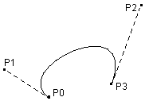

Bezier-Kurven
Klick auf Zeichne! zeichnet die geschlossenen Kurve mit den aktuellen 4 Punkten. Die Koordinaten dieser Punkte können Sie
durch Tastatureingabe in die entsprechenden Felder verändern.
Der Zeichenbereich liegt für x- und die y-Werte zwischen 0 und 10.
Sie können die vier Punkte auch mit Mausklick eingeben (Reihenfolge P0, P1, P2 und P3). Es wird nach der Eingabe von P3 die nicht geschlossene
Bezier-Kurve gemäss untenstehender Figur gezeichnet.
Ist die Checkbox Zufallsfigur angekreuzt, so bestimmt der Computer (nach Klick auf Zeichne!) vier Zufallspunkte und
eine Zufallsfarbe und zeichnet die geschlossene Kurve.
x0 y0
x1 y1
x2 y2
x3 y3
Eine (2-dim) Bezier-Kurve ist durch vier Punkte bestimmt:
Anfangspunkt P0(x0/y0), Endpunkt P3(x3/y3); der Punkt
P1(x1/y1) bestimmt die
Tangente im Anfangspunkt, der Punkt P2(x2/y2) die Tangente im Endpunkt:

Die geschlossene Kurve entsteht, indem man entweder Punkt P3 = Punkt P0 wählt oder wie hier, indem man eine zweite
Bezierkurve mit Anfangspunkt P3 und Endpunkt P0 zeichnet, während dem die Tangenten beibehalten werden.
Autor: B.Berchtold